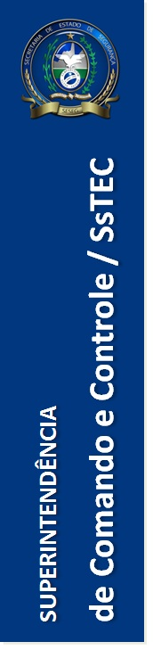

|

|
- Garantir que as informações sobre as operações em curso sejam reunidas e documentadas.
- Avaliar a eficácia do apoio logístico e realizar os ajustes necessários de organização e procedimentos.
- Garantir que, individualmente, cada agência operacionalize o que foi proposto no 204 (Lista de designações).
- Supervisionar as ações em curso para garantir a troca de informações operacionais, administrativas e financeiras de forma precisa e oportuna.
- Corrigir práticas inseguras quepor ventura estejam ocorrendo nas operações em curso.
- Subsidiar o responsável pelo contato com a mídia com informações precisas.
|